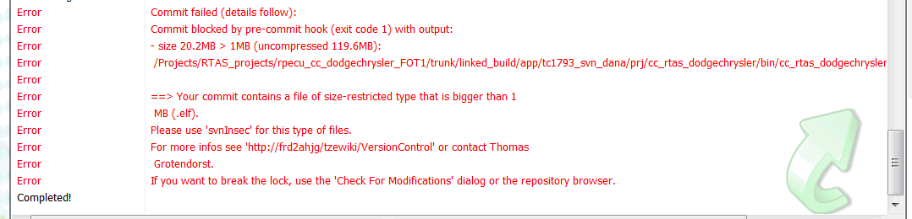

Hi RPECU-Users,
as some of you might already have noticed, we are no longer supposed to commit the RPECU elf/hex-files to the repository. Actually, if you try to do so, you will receive an error message looking like this:

According to Thomas Grotendorst, binaries are not supposed to be commited to the repository, since they dramatically increase the size of it. Therefore, these files are now blocked from being commited. However, from my point of view, it is still important to commit those files, since we do not have a built server and there are frequent requests for fixed, flashable versions (e.g., before presentations) by people who do not have the toolchain to built the sw on their own.
Fortunately, there exists another repository (svnInsec), which allows the storage of binaries. Thomas Grotendorst proposed to store the files there and add them as externals to our corresponding bin folder in the regular svn. The following example shows how this looks like:

Comparable to our base sw the binaries are added as externals with a fixed revision number, in order to guarantee that when creating a tag it will point to the right revision (instead of always pointing to the HEAD revision).
However, you might rather be interested, how this affects you as a user. The impact is rather small.
If you commit the whole project (e.g. rpecu_ad_b8) to svn the commit window indicates that the bin folder is an external from a different repository, which can not be directly commited in one step with the other changed files. The following screenshot gives an example.

If you want to commit the binaries as well, you have to go to the bin folder and commit it. The following screen appears.

In addition, svn tells you that you have commited changes to an external item that is tagged to a specific revision and asks if you want to change the tagged revision now to the just commited revision. Click Change the tagged revision.

If you now want to create a tag of the whole project (again rpecu_ad_b8 as an example), the window looks like this. You can see that the binaries appear with a fixed revision in the lower part of the window.

Currently, only rpecu_ad_b8 is changed to this structure. However, I will try to shift the other rpecu projects as well in the next days.
Please spread this information to other RPECU users that I might have forgot.
Best regards
Fabian